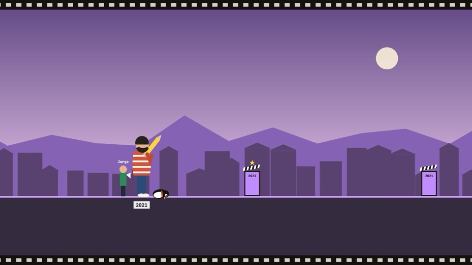
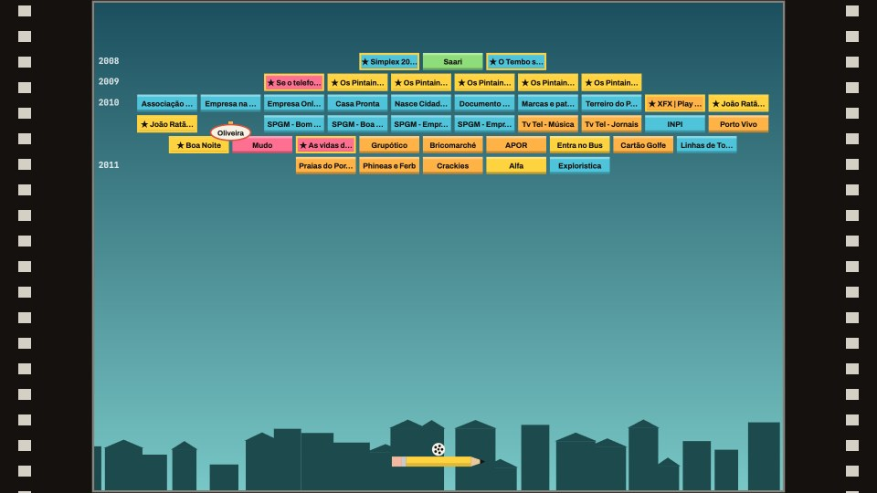

Jorge Ribeiro ·
Escolha um jogo

▶ JogarCorrida das Claquetes
Corra de 1999 até hoje e salte cada obra real. As encomendas pesam, os realizadores com quem trabalhou protegem e, a partir de 2018, o pinguim abre caminho.

▶ JogarParede de Obras
Um Arkanoid com sete paredes, uma por período. Cada tijolo é uma obra e cada fila um ano. As obras realizadas por ele aguentam dois toques. Os realizadores alargam o lápis e o pinguim traz mais bobinas.